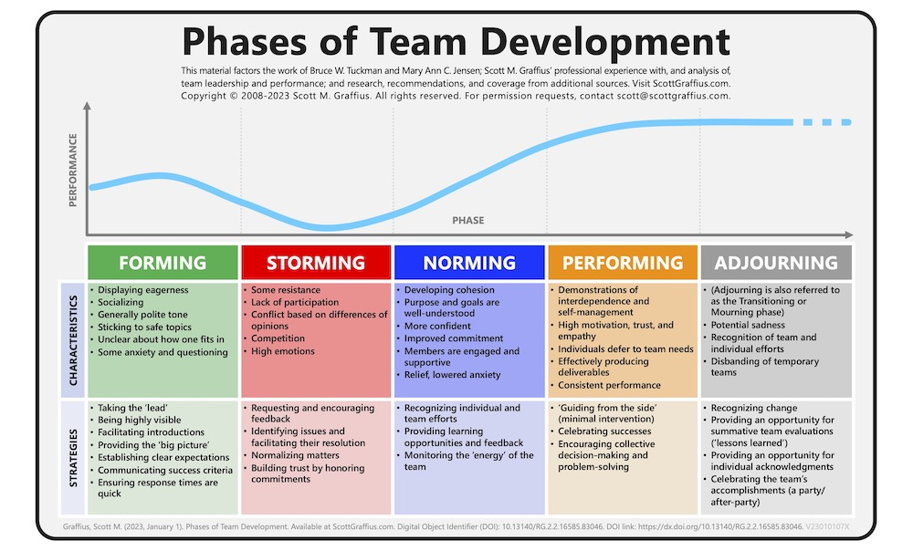
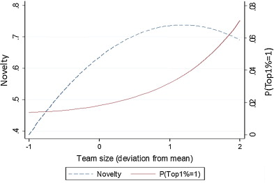
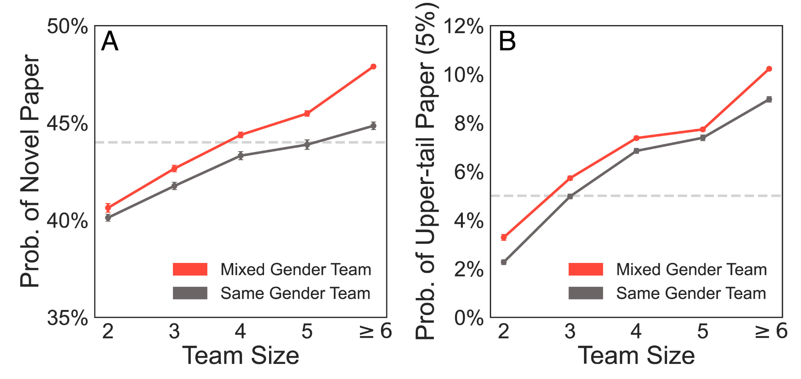
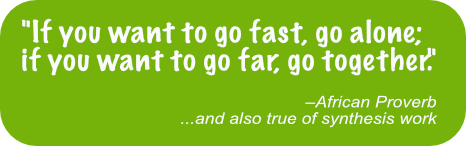

Version Control & Team Science Fundamentals
Overview
Under Construction
Learning Objectives
TBD
Preparation
TBD
Introduction to Version Control
LTER Workshop Materials
The workshop materials we will be working through live here but for convenience we have also embedded the workshop directly into the SSECR course website (see below).
Recommendations for Using Git
It is important to remember that while Git is a phenomenal tool for collaboration, it is not Google Docs! You can work together but you cannot work simultaneously in the same files. Working at the same time is how merge conflicts happen which can be a huge pain to untangle after the fact. Fortunately, avoiding merge conflicts is relatively simple! Here are a few strategies for avoiding conflicts.
At it’s simplest, you can make a separate script for each group member and have each of you work exclusively in your own script. If no one ever works in your script you will never have a merge conflict even if you are working in your script at the same time as someone else is working in theirs.
You can do this by all working on separate scripts that are trying to do the same thing or you can delegate a particular script in the workflow to a single person (e.g., one person is the only one allowed to edit the ‘data wrangling’ script, another is the only one allowed to edit the ‘analysis’ script, etc.)
Recommendation: Worth Discussing!
You might also decide to work together on the same scripts and just stagger the time that you are doing stuff so that all of your changes are made, committed, and pushed before the next person begins work. This is a particularly nice option if you have people in different time zones because someone in Maine can work on code likely before another team member living in Oregon has even woken up much less started working on code.
For this to work you will need to communicate extensively with the rest of your team so that you are absolutely sure that you won’t start working before someone else has finished their edits.
Recommendation: Worth Discussing!
GitHub does offer a “fork” feature where people can make a copy of a given repository that they then ‘own’. Forks are connected to the source repository and you can open a pull request to get the edits from one fork into the source repository.
This may sound like a perfect fit for collaboration but in reality it introduces significant hurdles! Consider the following:
- It is difficult to know where the “best” version of the code lives
It is equally likely for the primary code version to be in any group member’s fork (or the original fork). So if you want to re-run a set of analyses you’ll need to hunt down which fork the current script lives in rather than consulting a single repository in which you all work together.
- You essentially guarantee significant merge conflicts
If everyone is working independently and submitting pull requests to merge back into the main repository you all but ensure that people will make different edits that GitHub then doesn’t know how to resolve. The pull request will tell you that there are merge conflicts but you still need to fix them yourself–and now that fixing effort must be done in someone else’s fork of the repository.
- It’s not the intended use of GitHub forks
Forks are intended for when you want to take a set of code and then “go your own way” with that code base. While there is a mechanism for contributing those edits back to the main repository it’s really better used when you never intend to do a pull request and thus don’t have to worry about eventual merge conflicts. A good example here is you might attend a workshop and decide to offer a similar workshop yourself. You could then fork the original workshop’s repository to serve as a starting point for your version and save yourself from unnecessary labor. It would be bizarre for you to suggest that your workshop should replace the original one even if did begin with that content.
Recommendation: Don’t Do This
GitHub also offers a “branch” feature which is similar to forks in some ways. Branches create parallel workspaces within a single repository as opposed to forks that create a copy of a repository under a different user.
These have the same hurdles as forks so check out the first two points in the “Work in Forks” tab. Also, just like forks, this isn’t how branches were meant to be used either! Branches exist so that you can leave some version of the code untouched while simultaneously developing some improvement in a branch. That way the user experiences a seamless upgrade while still allowing you to have a messy development period. Branches are not intended for multiple people to be working on the same things at the same time and merge conflicts are the likely outcome of using branches in this way.
Recommendation: Don’t Do This
You may be tempted to just delegate all code editing to a single person in the group. While this strategy does guarantee that there will never be a merge conflict it is also deeply inequitable as it places an unfair share of the labor of the project on one person.
Practically-speaking this also encourages an atmosphere where only one person can even read your group’s code. This makes it difficult for other group members to contribute and ultimately may cause your group to ‘miss out on’ novel insights.
Recommendation: Don’t Do This
Science of Team Science
Research in management, organizational behavior, and psychology has long focused on the performance of teams–often in military, healthcare and industrial contexts. While many aspects of this work are also relevant to scientific teams, there are some key differences having to do with differences in context, leadership, and incentives. In the early 2000’s–as collaboration in science increased–the need for empirical research into the workings of science teams became apparent. The field of “science of team science” or SiTS was launched in 2006 with a conference at the National Institutes of Health (Stokols et al. 2008).
A National Academies study on the Science of Team Science (NRC 2015) assembled the existing evidence base and launched a flurry of research into how team composition, coordination, support, and organizational context could improve outcomes for science teams. A new National Academies study on Research and Application in Team Science is currently in progress. Our goal here is not to review the whole field, but to provide a framework for thinking about the team functioning and process and to identify some key team science practices that are supported by both research and practical experience.
Predictable Team Trajectory
Creating a team is not just a matter of putting a bunch of people in a room together. Social scientists have identified consistent patterns in the evolution of teams (Tuckman 1965, Tuckman and Jenson 1977). Knowing that this is a process nearly every team experiences may make it (at least somewhat) more comfortable.

Teams that are assembled from across organizations must agree to adopt a common set of norms and processes in order to progress from storming to performing. This can feel like a detour from the science, but a modest early investment in developing shared practices pays off in the long run.
Instrumental Benefits of Diverse Teams

There is pretty good evidence that collaborative teams produce research that is more novel and has higher impact than work produced by individuals or smaller more homogeneous groups (Lee at al. 2015, Hong and Page 2024). Woolley et al (2010) found evidence for a “collective intelligence” in teams, which is not strongly correlated with the average or maximum individual intelligence of group members but is correlated with the average social sensitivity of group members, the equality in distribution of conversational turn-taking, and the proportion of females in the group.
Similarly, in a study of 6.6 million medical research papers, Yang et al. found that mixed gender teams consistently produced more novel and more impactful products. In another bibliographic analysis Abbasi and Jaafari (2013) found that inter-institute and inter-university collaborations resulted in higher-impact publications. Interestingly, the result was much weaker for international collaborations.


It seems reasonable to expect that the effects of cultural and economic diversity on teams would be similar to that of gender diversity, but those factors remain harder to parse at this scale. In any case, the bump in creativity or publishing impact is only a happy side effect of assembling a diverse team. The real reason to do so is that it allows us to tackle bigger questions, makes our findings more relevant, our science more fun, and our world more fair. What it does not do (at least in our experience) is make the process faster!
A More Nuanced View Emerges
The paradox of team science is that the very factors that slow progress may be exactly the factors that generate new insight – Milliken and Martins’ (1996) double-edged sword. The pressing question becomes not: “Does diversity improve team performance?” but rather: “How and when does diversity improve team performance?”
What Mechanisms are Responsible for the Diversity Effect?
Information Elaboration
The categorization-elaboration model (CEM, van Knippenberg et al. 2004) proposed that information elaboration—-that is, the exchange, discussion, and integration of task-relevant information and perspectives, was responsible for many of the benefits attributed to diverse groups. But later researchers found there were a few necessary conditions for cognitive elaboration to take place and for groups to reap the benefits. Only when team members brought a learning goal orientation to their work and when they remained open to revising their original ideas (Nederveen Pieterse 2013) did diversity improve team performance.
Avoiding ‘groupthink’
We are all familiar with the “we’ve always done it this way” effect that can happen when a group of people have been working together for a while. By introducing people from new fields, laboratories, or cultures, that complacent thinking is disrupted. Often, the very act of justifying why we do something the way we do can invite a rethinking and improvement.
Metacognition
Metacognition, or “thinking about thinking” requires individuals to reflect and articulate their process for achieving new knowledge. What information goes in? Is information missing? How should it be analyzed and interpreted? Are those conclusions justified?
Enhanced group scanning ability and consideration of alternative solutions
A science team may include members from different research disciplines, sectors, geographies or cultures. Along each of those axes, team members will have different personal networks and be more (or less) familiar with different literatures, models, communities, tools, and solutions. Collectively, the group has a much broader range of information to draw on…but only if group members feel empowered to contribute.
Better task completion and more efficient use of resources
“Many hands make light work” the saying goes. Think of a meta-analysis where 10 group members can each read 30 papers instead of 1 individual reading 300 papers. Dividing the workload can speed up the process, but only if there is an efficient way to manage dividing the work and then bringing the results back together again. Similarly, relying on a few skilled coders can be much more efficient than each individual writing their own code, but unless the group has a mechanism for getting broad input on key decisions, they will lose the value created by bringing together a larger group.